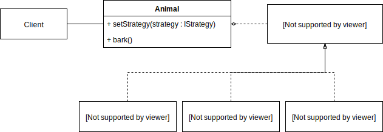
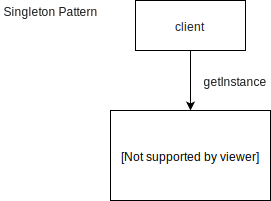
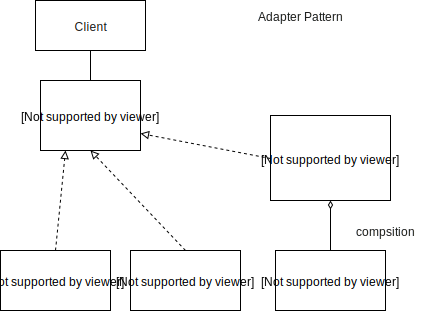

オブジェクト指向の原則
-
変化する部分と変化しない部分を分離する。
変化する部分をカプセル化する。 変化する部分とは仕様変更が発生しそうな箇所のこと。 カプセル化とは隠蔽すること。 つまり主体クラスに仕様変更が起きそうな箇所がある場合、その箇所を主体クラスに記述するのでなく、別クラスとして分離して隠蔽する。
-
継承よりコンポーネントを使う。
継承を使っていけないわけではない。
-
拡張しやすく、変更しにくい構造にする。
既存のプログラムは時間をかけてテストをしているので品質が高い。 しかし、そのプログラムを変更してしまうと品質が一気に下がってしまう。もう一度時間をかけてテストをしなければならない。
-
抽象に依存し、具象クラスに依存させない。（依存性反転の原則）
高水準コンポーネントは低水準コンポーネントに依存してはいけない。抽象に依存する。
-
オブジェクト同士はなるべく疎結合にする。
より柔軟な設計になるし、修正もしやすくなる。
コマンドパターン
どのようなときにコマンドパターンを活用するか
- コマンド（命令）をパラメータ化したいとき。
- 非同期でコマンドを実行したいとき。
コマンドパターンの解説
コマンドパターンは、コマンド（命令）実行のタイミングをずらしたいときや（非同期処理）、コマンドを単純な文字列からなるパラメータ（エンティティ）として管理したいときに活用できる。 ペイントツールや図形ツールなど、取り消し機能と多数コマンドからなるシステムを開発するときに取り入れるとよい。利点としては、一つのコマンドに一つのクラスが割り当てられているのでソースコードの解読が容易になり、修正や拡張がしやすい。つまり保守性の高いプログラムになる。
システムが複雑になりそうだと判断したときにコマンドパターンを適用すること。シンプルなシステムにコマンドパターンを適用するとかえって冗長になるだけである。
コマンドパターンを構成するクラスは、制御クラス、Commandインターフェース、各種Commandクラス、Invoker(起動者)クラス、Receiver（受信機）クラスである。
コマンドパターンのクラス図

クライアント（Client）
クライアント(依頼者)はコマンドパターンを利用する側のモジュールやオブジェクト。 「依頼者」という意味がある通り、実行する命令（コマンド）をパラメータ形式で制御クラスに渡し依頼する。
パラメータはエンティティ形式であり、コマンドを表す文字列やそれに付随する数値や日付といった属性値で構成されている。 コマンドパターンでは命令をこのようなパラメータとして管理するのが肝である。
制御クラス(Animal)
このクラスはInvoker,Reciver,各コマンドクラスを束ねており、クライアントが依頼する窓口でもある。
クライアントからコマンドのパラメータを受け取り、そのパラメータをInvokerに渡し、Invokerは適切なタイミングでコマンドを実行する。 コマンドのレスポンス（実行結果）はReceiverクラスで管理している。
制御クラスがInvokerとReceiverの役割を兼ねることがよくある。
Commandインターフェース
各コマンドクラスのインターフェース。
コマンドパターンでは原則として、このインターフェースを定義し、各コマンドクラスに実装しなければならない（保守性の向上のため）。
基本的にコマンド実行である一つの抽象メソッド「execute」を定義する。 場合によってはundo（取り消し機能）などの抽象メソッドを追加定義してもいいが、やたらと追加定義すべきではない。
各コマンドクラス（〇〇Command)
コマンドの実行処理が記述されているクラス。
一つのコマンド（命令）に一つのコマンドクラスというのが原則である。 このような原則にしている理由は、修正しやすくするためである。疎結合になり修正に強くなる。
インターフェースで定義されているメソッド(execute)を実装し、コマンドの内容であるロジックを記述する。
引数はパラメータ(param)から受け取るようにするとよい。
返り値はレシーバ（Receiver）に渡すような仕組みにするとよい。この部分は制御クラス（Animal)やInvokerに記述してもよい。
起動者(Invoker)
Invokerは「起動者」という意味がある。 その名前の通り、各種コマンド（〇〇Command）を実行（起動）する役割がある。
どのコマンドを実行するかはパラメータ(param)で指定する。(invokeメソッド） パラメータは命令を意味する文字列と補足数値などから構成されるエンティティである。 また、パラメータを渡されたらすぐにコマンドを実行するのでなく、一旦、キュー(que)に保存される。 その後、適切なタイミングでキューからパラメータを取り出し、コマンドを実行する。 どのようなタイミングにするかは、当クラス内で記述されたロジックにより決まる。
Invokerの処理がシンプルになるようであれば、制御クラス（Animalクラス）に統合してもよい。
受信機(Receiver)
Receiverには「受信機」という意味がある。 この名前の通り、コマンドの実行結果を受信する役割がある。
実行結果をタイミングずらしてクライアントに通知したいときなどに利用する。 また、実行結果をログ出力したり、テキストファイル出力したりする処理も受信機の役割とすることができる。
Invokerの処理がシンプルになるようであれば、制御クラス（Animalクラス）に統合してもよい。
ストラテジーパターン
どのようなときにストラテジーパターン(Strategy パターン)を適用するか？
メソッドの振る舞い（ロジック部分）を状況によって変更切替ができるようにしたいとき。解説
ストラテジーパターンを適用すると環境やステータスによってメソッドの振る舞いを切り替えることができる。ストラテジーパターンには「戦略」という意味がある。 実際の戦略にはプランA、プランBとなどといった状況により戦略を変更することがあるが、 ストラテジーパターンも同じで状況によりメソッドを処理A,処理Bというふうに振る舞いを変更できる。
IF文との比較
ストラテジーパターンを乱用してはならない。 振る舞いの変更はif文でもできるので普段はこちらを使うべき。ストラテジーパターンは基礎的な部分の振る舞い変更に適用すべきである。 PC版とスマホ版でメソッドの振る舞いを変更する場合や、 DBの種類を問わずに動作するライブラリ的なクラスを作成するときにストラテジーパターンは役に立つ。
よく１つの画面に複数のモードが存在していることがある。 このようなケースの場合、モードごとに振る舞いを変更するという場面は多い。 こんなときこそストラテジーパターンの出番である。
ストラテジーパターンのクラス図
ソースコード(PHP)
<?php
class Animal{
private $barkStrategy;
public function __construct($mode='neko'){
// 下記のストラテジー変更は一例に過ぎない。ストラテジーを変更する方法はいろいろある。
$barkStrategy = new CatStrategy();
if($mode == 'inu'){
$this->setStrategy(new DogStrategy());
}else if($mode=='buta'){
$this->setStrategy(new PigStrategy());
}else{
$this->setStrategy(new CatStrategy());
}
}
public function setStrategy(IBarkStrategy $barkStrategy){
$this->barkStrategy = $barkStrategy;
}
public function bark(){
$this->barkStrategy->bark();
}
}
interface IBarkStrategy{
public function bark();
}
// ストラテジーインターフェース
class CatStrategy implements IBarkStrategy{
public function bark(){
echo 'ニャオーン';
}
}
class DogStrategy implements IBarkStrategy{
public function bark(){
echo 'ワン ワン';
}
}
class PigStrategy implements IBarkStrategy{
public function bark(){
echo 'キーキー';
}
}
// 検証
$animal = new Animal('inu');
$animal->bark(); // → ワン ワン
echo '<br>';
$animal->setStrategy(new PigStrategy());
$animal->bark(); // → キーキー
echo '<br>';
$animal->setStrategy(new CatStrategy());
$animal->bark(); // → ニャオーン
echo '<br>';
?>
オブザーバーパターン(Observer)
どんなときにオブザーバーパターンを活用するか？
サブジェクト（主体クラス）からの更新通知を受け取って処理を行いたいとき。解説
オブザーバーには「観察者」という意味がある。 その名前の通り、オブザーバークラスはサブジェクトクラス（主体クラス）からの更新通知を観察し、通知を確認したら何らかの処理を行う。例えばサブジェクトが何らかの更新を行ったら、ログ出力、DBに保存、メール送信、twitterに投稿などといった機能を開発するときオブザーバーパターンは活躍する。
オブザーバーパターンのクラス図
オブザーバーパターンのサンプルソースコード
interface IObserver{
public function update($data);
}
class LogObserver implements IObserver{
public function update($data){
echo 'ログ出力を行いました。（ダミー）'.$data['date1'].'<br>';
}
}
class MailObserver implements IObserver{
public function update($data){
echo 'メール送信を行いました。（ダミー）'.$data['date1'].'<br>';
}
}
class TwitterObserver implements IObserver{
public function update($data){
echo 'Twitterへ投稿しました。（ダミー）'.$data['date1'].'<br>';
}
}
class SubjectBase{
public $observers = array();
public function addObserver(IObserver $observer){
$this->observers[] = $observer;
}
public function notifyObservers($data){
for($i=0; $i<count($this->observers); $i++){
$observer = $this->observers[$i];
$observer->update($data);
}
}
}
class AnimalSubject extends SubjectBase{
public function __construct(){
$this->addObserver(new LogObserver());
$this->addObserver(new MailObserver());
$this->addObserver(new TwitterObserver());
}
public function action(){
$data = array('date1' => date('Y-m-d H:i:s'));
$this->notifyObservers($data);
}
}
// 検証
$animal = new AnimalSubject();
$animal->action();
ログ出力を行いました。（ダミー）2018-06-05 11:02:45 メール送信を行いました。（ダミー）2018-06-05 11:02:45 Twitterへ投稿しました。（ダミー）2018-06-05 11:02:45
ステートパターン(Stateパターン)
ステートパターンの解説
ステートパターンの基本的な仕組みは「状態」と「アクション」の総当たり組み合わせである。 MECEという思考法と基本的に同じ。一つの「状態」を一つのクラスとし、そのクラスのメソッドが「アクション」という構造になっている。
アクション内の処理で別の「状態」に切り替わるような処理が施される。
アルゴリズムの交換という点でストラテジーパターンと類似しているが、ステートパターンは「状態」に特化している点で異なっている。
ステートパターンのメリット
ステートパターンを適用すると「状態」や「アクション」に仕様変更または追加があっても対応しやすくなるメリットがある。 つまり保守性の高いコードになる。とはいえ、適所に適用しないとかえって複雑になり保守性は低くなる。乱用は禁物。
if文との比較
「状態」は、ステートパターンを使わずともif文だけで実現可能。「状態」がシンプルで重要でないならステートパターンを使わずif文を使ったほうが良い。
ステートパターンの弱点
ステートパターンは一度に1つの状態にしか適用できない。 つまり、一度に2つ以上の状態にすることはできない。例えば「未払い状態」かつ「予約状態」という同時に2つの状態とすることができない。 「未払い予約状態」という一つの状態にまとめるか、if文に頼る必要がある。
ステートパターンのクラス図
状態とアクションの総当たり組み合わせ(MECE)
| 状態 | アクション | 処理 |
|---|---|---|
| 予約状態(ReservState) | 予約する(reservation) | 予約済みです。 |
| 予約状態 | チェックインする(checkin) | チェックインし、滞在状態になりました。 |
| 予約状態 | チェックアウトする(checkout) | 予約状態でチェックアウトはできません。 |
| 滞在状態(StayState) | 予約する | 別件で予約状態にします。 |
| 滞在状態 | チェックインする | チェックイン済みです。 |
| 滞在状態 | チェックアウトする | チェックアウトして、未予約状態になりました。 |
| 未予約状態(UnreservState) | 予約する | 予約して、予約状態になりました。 |
| 未予約状態 | チェックインする | 空き室があれば滞在状態になります。空き室がなければ未予約状態のままです。 |
| 未予約状態 | チェックアウトする | チェックインしていないのでチェックアウトできません。 |
ステートパターンのサンプルソースコード(PHP)
interface IState{
public function reservation();
public function checkin();
public function checkout();
}
class ReservState implements IState{
private $subject;
public function __construct(Hotel $subject){
$this->subject = $subject;
}
public function reservation(){
echo '予約済みです。<br>';
}
public function checkin(){
echo 'チェックインし、滞在状態になりました。<br>';
$this->subject->changeState(new StayState($this->subject));
}
public function checkout(){
echo '予約状態でチェックアウトはできません。<br>';
}
}
class StayState implements IState{
private $subject;
public function __construct(Hotel $subject){
$this->subject = $subject;
}
public function reservation(){
echo '別件で予約状態にします。<br>';
}
public function checkin(){
echo 'チェックイン済みです。<br>';
}
public function checkout(){
echo 'チェックアウトして、未予約状態になりました。<br>';
$this->subject->changeState(new UnreservState($this->subject));
}
}
class UnreservState implements IState{
private $subject;
public function __construct(Hotel $subject){
$this->subject = $subject;
}
public function reservation(){
echo '予約して、予約状態になりました。<br>';
$this->subject->changeState(new ReservState($this->subject));
}
public function checkin(){
echo '空き室があれば滞在状態になります。空き室がなければ未予約状態のままです。<br>';
}
public function checkout(){
echo 'チェックインしていないのでチェックアウトできません。<br>';
}
}
class Hotel{
private $state; // <IState>
public function __construct(){
$this->state = new UnreservState($this); // 未予約状態
}
/**
* 状態を変更する
* @param IState $state 状態クラスのインスタンス
*/
public function changeState(IState $state){
$this->state = $state;
}
public function reserveAction(){
$this->state->reservation();
}
public function checkinAction(){
$this->state->checkin();
}
public function checkoutAction(){
$this->state->checkout();
}
}
$hotel = new Hotel();
$hotel->reserveAction();
$hotel->checkinAction();
$hotel->checkinAction();
$hotel->checkoutAction();
予約して、予約状態になりました。 チェックインし、滞在状態になりました。 チェックイン済みです。 チェックアウトして、未予約状態になりました。
デコレーターパターン | DECORATORパターン
どんなときにデコレーターパターンを使うか？
- 既存のクラスに手を加えずに拡張するとき。
- 装飾するようにクラスを自在にカスタマイズするとき。
デコレーターパターンの解説
オブジェクト指向には、「修正ではなく拡張をする」という原則がある。 既存のソースコードは時間をかけてテストをした品質が高いものである。 そのためできるだけ既存のソースコードに手を入れず、拡張するようにしたほうが良い。 デコレーターパターンは、この原則を当てはめるときに役に立つ。また、デコレーターは「装飾」という意味があるように、クラスを自在に装飾することができる。 例えとして、猫クラスに「黒」のデコレータで装飾すると黒猫クラスになる。 さらに「大型」デコレータで装飾すると「大型黒猫クラス」になる。 装飾は１つだけとはかぎらずいくつでも装飾できる。
デコレーターパターンのクラス図
デコレーターパターンのサンプルソースコード
class Pet{
public $name = 'none';
public function getName(){
return $this->name;
}
public function bark(){
return '吠える';
}
public function price(){
return 0;
}
}
class Cat extends Pet{
public function __construct(){
$this->name = 'ネコ';
}
public function bark(){
return 'ニャゴー';
}
public function price(){
return 10000;
}
}
class Dog extends Pet{
public function __construct(){
$this->name = '犬';
}
public function bark(){
return 'ワンワン';
}
public function price(){
return 10;
}
}
// デコレータークラス
class Decorator extends Pet{
protected $pet;
public function __construct(Pet $pet){
$this->pet = $pet;
}
public function getName(){
return $this->pet->getName();
}
public function bark(){
return $this->pet->bark();
}
public function price(){
return $this->pet->price();
}
}
class Big extends Decorator{
public function getName(){
return '大きい' . $this->pet->getName();
}
public function price(){
return $this->pet->price() + 500;
}
}
class Small extends Decorator{
public function getName(){
return '小さい' . $this->pet->getName();
}
public function price(){
return $this->pet->price() + 200;
}
}
class Black extends Decorator{
public function getName(){
return '黒い' . $this->pet->getName();
}
public function price(){
return $this->pet->price() + 50;
}
}
class Bowlingual extends Decorator{
public function bark(){
return $this->pet->bark() . '(今日の天気はいかがですか)';
}
}
// 検証
$cat = new Cat();
output($cat);
$bigCat = new Big($cat);
output($bigCat);
$smallCat = new Small($cat);
output($smallCat);
$blackCat = new Bowlingual($smallCat);
output($blackCat);
$blackCat = new Black($smallCat);
$dog = new Dog();
$dog = new Black($dog);
$dog = new Big($dog);
output($dog);
function output(Pet $pet){
echo $pet->getName() . ' → ' . $pet->bark() . ' → ' . $pet->price() . '円<br>';
}
予約して、予約状態になりました。 チェックインし、滞在状態になりました。 チェックイン済みです。 チェックアウトして、未予約状態になりました。
ファクトリーパターンについて
オブジェクト指向には「変化する部分と変化しない部分を分離する」という原則がある。 変化とは仕様変更のこと。 インスタンス生成する部分が変化する可能性がある場合、この部分を別クラスとして分離すべきである。 その分離したインスタンス生成を行うクラスをファクトリーと呼ぶ。 逆にインスタンス生成する部分が変化することがないのであればファクトリーを使う必要はない。ファクトリーパターンを適用すると、インスタンス生成する箇所が一ヵ所に集まるので管理しやすい。 またインスタンス生成部分をパラメータ化することもできる。
ファクトリーパターンは3種類存在する。
シンプルファクトリー | Simple Facroty
シンプルファクトリはシンプルにインスタンス生成部分をクラスとして分離したものである。また、正確にはデザインパターンでなくプログラミングのイディオム（慣用）である。
シンプルファクトリーのクラス図
シンプルファクトリーのサンプルソースコード(PHP)
class Park{
public function action(){
// ファクトリー
$factory = new SimpleFactory();
$animal = $factory->createAnimal('cat');
$animal->bark();
$animal = $factory->createAnimal('dog');
$animal->bark();
}
}
class SimpleFactory{
public function createAnimal($code){
$animal = null;
if($code=='cat'){
$animal = new Cat();
}else if($code=='dog'){
$animal = new dog();
}
return $animal;
}
}
interface IAnimal{
public function bark();
}
class Cat implements IAnimal{
public function bark(){
echo 'ゴロニャゴ<br>';
}
}
class Dog implements IAnimal{
public function bark(){
echo 'ワオーム<br>';
}
}
// 検証
$park = new Park();
$park->action();
ゴロニャゴ ワオーム
ファクトリーメソッド | Factory Method
どんなときにFactory Methodを用いるか？
主体クラスが複数のサブクラスに分かれており、そしてサブクラスごとにファクトリーで生成するProductクラス（製品クラス）が異なる場合に利用する。Factory MethodとAbstract Factoryの比較
Factory Methodは継承を使っているのに対し、Abstract Factoryはコンポジションを使っている。サブクラスごとに異なるファクトリーという構造ならFactory Methodを採用すべき。
生成すべきProductクラスが多数存在し、グループとしてまとめたいならAbstract Factoryを採用する。
なお、生成すべきProductクラスが少ないのであればSimple Factoryで十分である。
ファクトリーメソッドのクラス図
ファクトリーメソッドのサンプルソースコード(PHP)
abstract class Park{
public function action($code){
$animal = $this->createAnimal($code);
$animal->bark();
}
abstract public function createAnimal($code);
}
class UsPark extends Park{
public function createAnimal($code){
$animal = null;
if($code == 'cat'){
$animal = new AmericanShortHair();
}else if($code='dog'){
$animal = new AmericanTerrier();
}
return $animal;
}
}
class JapanPark extends Park{
public function createAnimal($code){
$animal = null;
if($code == 'cat'){
$animal = new MikeNeko();
}else if($code='dog'){
$animal = new SibaInu();
}
return $animal;
}
}
interface IAnimal{
public function bark();
}
class MikeNeko implements IAnimal{
public function bark(){
echo 'ミケー<br>';
}
}
class SibaInu implements IAnimal{
public function bark(){
echo 'ワン ワン<br>';
}
}
class AmericanShortHair implements IAnimal{
public function bark(){
echo 'meow<br>';
}
}
class AmericanTerrier implements IAnimal{
public function bark(){
echo 'bow bow<br>';
}
}
// 検証
$usPark = new UsPark();
$usPark->action('cat');
$usPark->action('dog');
$jpPark = new JapanPark();
$jpPark->action('cat');
$jpPark->action('dog');
出力
meow bow bow ミケー ワン ワン
アブストラクトファクトリー | Abstract Factory
どんなときにAbstractファクトリーを使うか？
ファクトリーで生成するProductクラス(製品クラス）が多数存在するとき、 大量のProductクラスをグループとして仕分けしたほうが良い。一つのグループを一つのファクトリーとして割り当てる方法がAbstractファクトリーである。
アブストラクトファクトリーのクラス図
アブストラクトファクトリーのサンプルコード
class ParkA{
public $factory;
public function setFactory(IFactory $factory){
$this->factory = $factory;
}
public function action(){
$cat = $this->factory->createCat();
$cat->crow_talk();
$dog = $this->factory->createDog();
$dog->bark();
}
}
interface IFactory{
public function createCat();
public function createDog();
}
class AmericanFactory implements IFactory{
public function createCat(){
return new AmericanShortHair();
}
public function createDog(){
return new AmericanTerrier();
}
}
class JapanFactory implements IFactory{
public function createCat(){
return new MikeNeko();
}
public function createDog(){
return new SibaInu();
}
}
interface ICat{
public function crow_talk();
}
interface IDog{
public function bark();
}
class MikeNeko implements ICat{
public function crow_talk(){
echo '三毛猫→ ニャー ニャー<br>';
}
}
class SibaInu implements IDog{
public function bark(){
echo '柴犬→ ワン ワン<br>';
}
}
class AmericanShortHair implements ICat{
public function crow_talk(){
echo 'アメショ→ mew mew<br>';
}
}
class AmericanTerrier implements IDog{
public function bark(){
echo 'テリア→ bow bow<br>';
}
}
// 検証
$park = new ParkA();
$park->setFactory(new AmericanFactory());
$park->action();
$park->setFactory(new JapanFactory());
$park->action();
シングルトンパターン | Singleton Pattern
唯一無二のインスタンスを作成する。DICON(DIコンテナ)を作成するときなどにシングルトンパターンを利用できる。
インスタンスが常に一つなのでメモリを節約できる利点もある。
シングルトンパターンクラスの特徴
コンストラクタをPrivateにすることにより new を禁止する。インスタンス取得はgetInstance()を使う。シングルトンパターンのクラス図
シングルトンパターンのサンプルソースコード(PHP)
class Singleton{
private static $instance; // 自分自身のインスタンス
private $test=0;
private function __construct(){
}
public static function getInstance(){
if(self::$instance == null){
self::$instance = new Singleton();
}
return self::$instance;
}
public function testMethod(){
$this->test ++;
echo $this->test.'<br>';
}
}
$singlton1 = Singleton::getInstance();
$singlton1->testMethod();
$singlton2 = Singleton::getInstance();
$singlton2->testMethod();
$singlton3 = Singleton::getInstance();
$singlton3->testMethod();
アダプターパターン | Adapter Pattern
アダプターパターンは既存のクラスを修正せずにインターフェースを適合する形にすることができる。煩雑になったインターフェースを一つにまとめたいときにも利用できる。
デコレーターパターンとの違い
アダプターパターンは既存のクラスを変更せずラップするという点でデコレーターパターンをよく似ている。 しかし役割が異なる。デコレーターパターンは仕様拡張に用いられるが、アダプターパターンは仕様を適合させるのに用いられる。アダプターパターンのクラス図
アダプターパターンのサンプルソースコード(PHP)
interface ICat{
public function crow();
}
class KuroNeko implements ICat{
public function crow(){
echo 'ニャオー<br>';
}
}
class BigCat implements ICat{
public function crow(){
echo 'マーオ<br>';
}
}
class Lion{
public function bark(){
echo 'ガオオォ<br>';
}
}
class LionAdapter implements ICat{
private $lion;
public function __construct(){
$this->lion = new Lion();
}
public function crow(){
echo $this->lion->bark();
}
}
// 検証
$cats = [];
$cats[] = new KuroNeko();
$cats[] = new BigCat();
$cats[] = new LionAdapter();
foreach($cats as $cat){
$cat->crow();
}
ニャオー マーオ ガオオォ